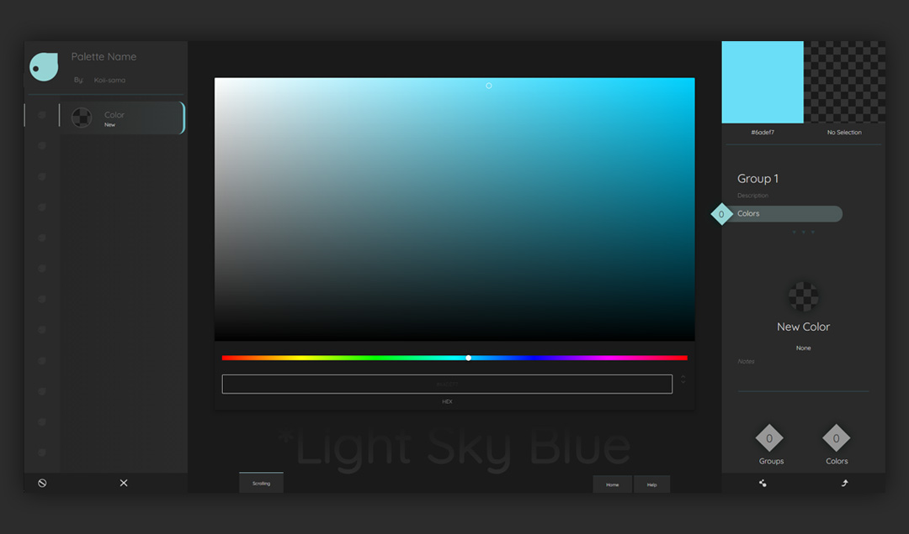
The main interface is separated into left, center, and right sections.
Layout: Palette
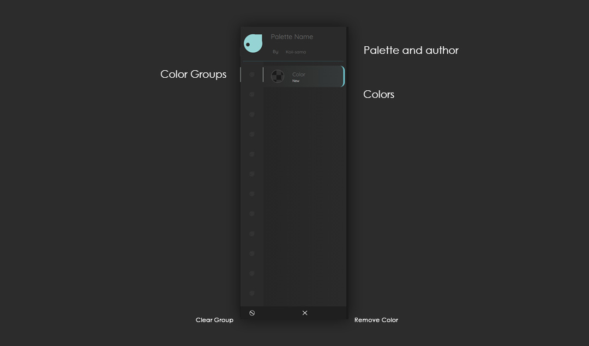
On the left is your color palette. A Palette has 12 color groups.
Layout: Color Picker
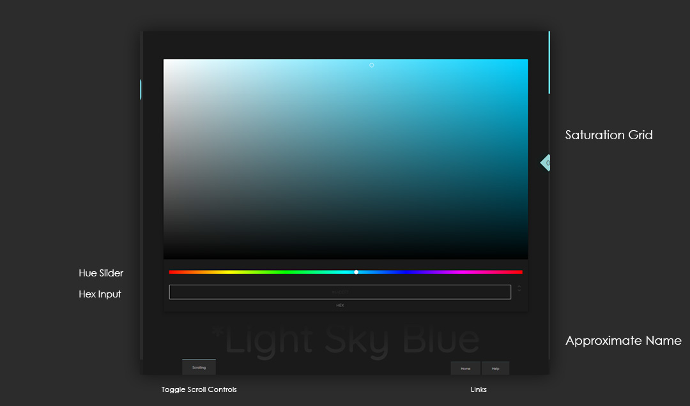
In the center is your color picker. Your picker's selected color is named below.
Layout: Information
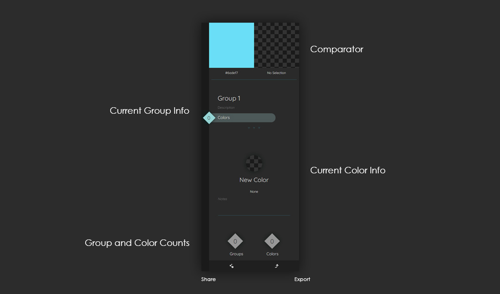
The right shows information about your selections.
Adding Colors
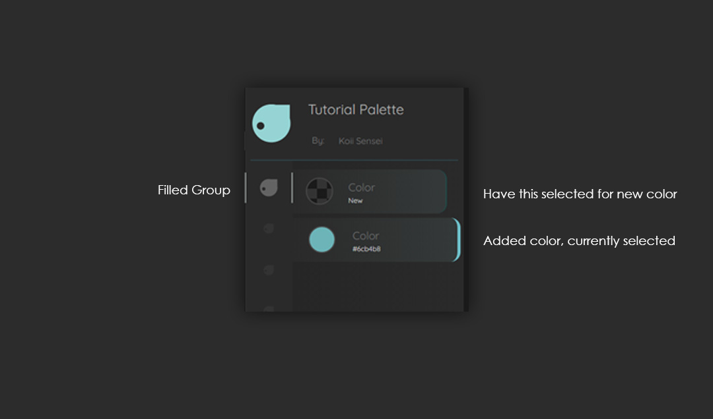
New colors from the color picker are added to the palette. The color group grows to indicate contents.
Changing Colors
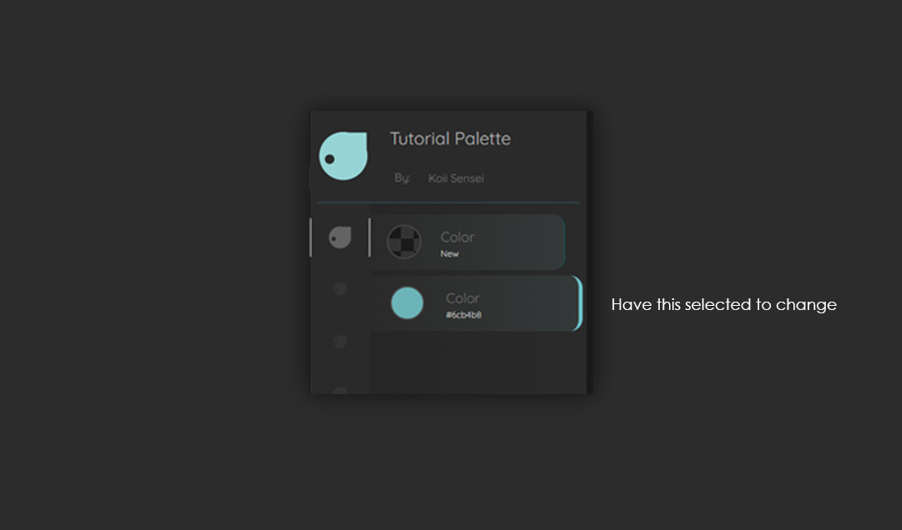
Have your color selected. Change the color by selecting a new color in the color picker.
Selecting Colors and Groups
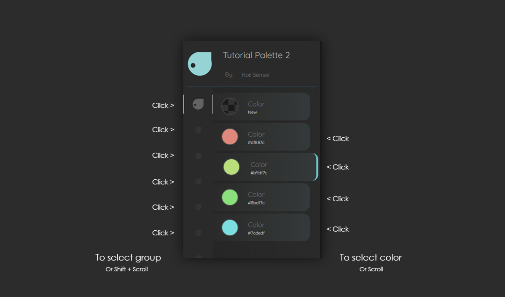
Click on a color or group to select it. Alternatively, you may scroll to cycle through colors and shift + scroll to cycle through groups.
Setting the Comparator
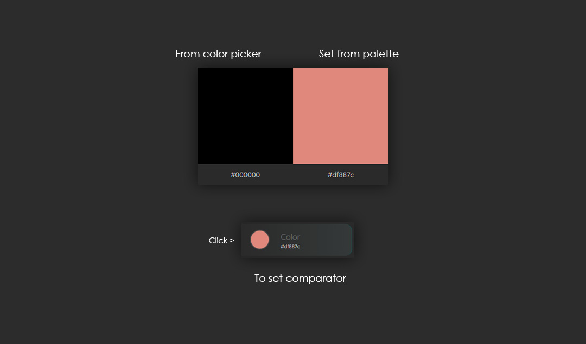
Click a color's preview display to set the comparator. Alternatively, press enter to set the comparator at you current color.
Names, Descriptions, and Notes
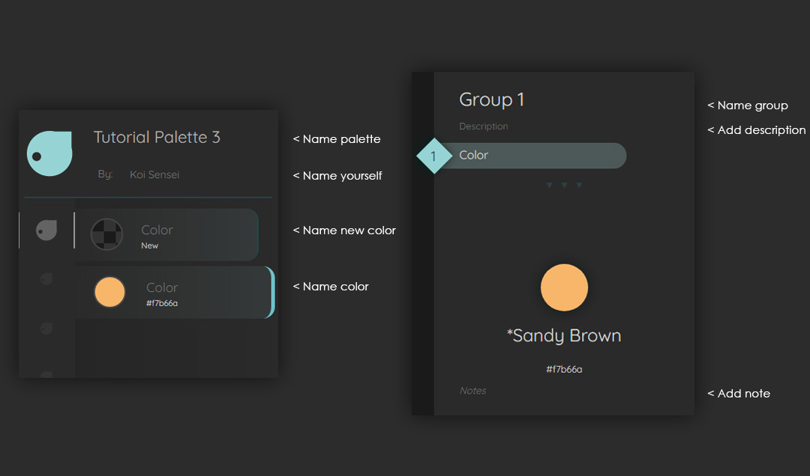
Name you palette, colors, and groups. Optionally, add descriptions to groups and notes to colors.
Sharing
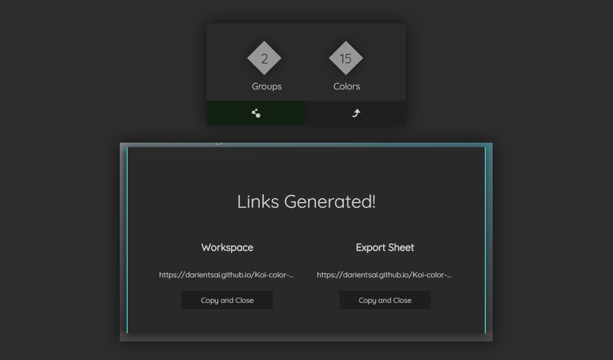
Click the share button to share your workspace or export sheet. Saving your workspace link lets you revisit your workspace. Press Esc to close the share popup.
Export
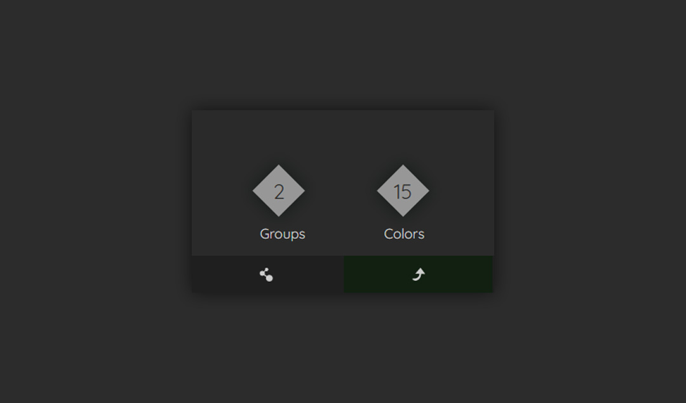
Click the export button when your palette is finished.